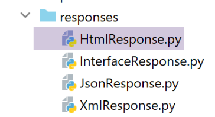
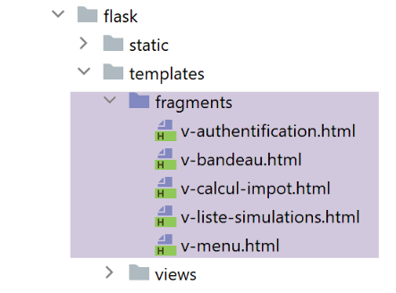

38. 应用练习：版本 18
38.1. 实现

[impots/http-servers/13]文件最初是通过复制[impots/http-servers/12]文件获得的，随后进行了部分修改。
首先，我们在文件 [configs/parameters] 中添加一个新参数：
…
# CSRF令牌
"with_csrftoken": False,
# 管理数据库 MySQL (mysql)、PostgreSQL (pgres)
"databases": ["mysql", "pgres"],
# 应用程序的 URL 前缀
# 若不需前缀，请将字符串设为空；否则请填写前缀
"prefix_url": "/do",
# Apache 服务器的根 URL——若在 Apache 外部运行，请将字符串设为空
"application_root": "/impots"
…
第 10 行，参数 [application_root] 将代表 Apache 虚拟服务器的别名 WSGI。
借助此参数，我们可以修正导致错误的 [responses/HtmlResponse] 指令：

…
# 现在需要生成重定向的URL，如果需要，别忘了添加令牌CSRF
if config['parameters']['with_csrftoken']:
csrf_token = f"/{generate_csrf()}"
else:
csrf_token = ""
# 重定向响应
return redirect(f"{config['parameters']['application_root']}{config['parameters']['prefix_url']}{ads['to']}{csrf_token}")
, status.HTTP_302_FOUND
- 第 9 行：我们在重定向目标 URL 的开头添加了应用程序根目录；
我们还需修正所有片段，确保其中包含的 URL 以应用程序根目录（或别名 WSGI）开头：

片段 [v-authentification]
<!-- 表单 HTML - 使用操作 [authentifier-utilisateur] 提交其值 -->
<form method="post" action="{{modèle.application_root}}{{modèle.prefix_url}}/authentifier-utilisateur{{modèle.csrf_token}}"
>
<!-- 标题 -->
<div class="alert alert-primary" role="alert">
<h4>Veuillez vous authentifier</h4>
</div>
…
</form>
片段 [v-calcul-impot]
<!-- 已发布的 HTML 表单 -->
<form method="post" action="{{modèle.application_root}}{{modèle.prefix_url}}/calculer-impot{{modèle.csrf_token}}">
<!-- 蓝色背景下的12列消息 -->
…
</form>
片段 [v-liste-simulations]
…
{% if modèle.simulations is defined and modèle.simulations|length!=0 %}
…
<!-- 模拟图表 -->
<table class="table table-sm table-hover table-striped">
…
<tr>
<th scope="row">{{simulation.id}}</th>
<td>{{simulation.marié}}</td>
<td>{{simulation.enfants}}</td>
<td>{{simulation.salaire}}</td>
<td>{{simulation.impôt}}</td>
<td>{{simulation.surcôte}}</td>
<td>{{simulation.décôte}}</td>
<td>{{simulation.réduction}}</td>
<td>{{simulation.taux}}</td>
<td><a href="{{modèle.application_root}}{{modèle.prefix_url}}/supprimer-simulation/{{simulation.id}}{{modèle.csrf_token}}">Supprimer</a></td>
</tr>
{% endfor %}
</tr>
</tbody>
</table>
{% endif %}
片段 [v-menu]
<!-- Bootstrap 菜单 -->
<nav class="nav flex-column">
<!-- 显示链接列表 HTML -->
{% for optionMenu in modèle.optionsMenu %}
<a class="nav-link" href="{{modèle.application_root}}{{modèle.prefix_url}}{{optionMenu.url}}{{modèle.csrf_token}}">{{optionMenu.text}}</a>
{% endfor %}
</nav>
上述片段均使用模板 [modèle.application_root]。目前，模板类生成的模板中尚不存在键 [application_root]。

作为所有生成模板的类之父类的 [AbstractBaseModelForView] 类，其内容如下：
from abc import abstractmethod
from flask import Request
from flask_wtf.csrf import generate_csrf
from werkzeug.local import LocalProxy
from InterfaceModelForView import InterfaceModelForView
class AbstractBaseModelForView(InterfaceModelForView):
@abstractmethod
def get_model_for_view(self, request: Request, session: LocalProxy, config: dict, résultat: dict) -> dict:
pass
def update_model(self, modèle: dict, config: dict):
# 令牌计算CSRF
if config['parameters']['with_csrftoken']:
csrf_token = f"/{generate_csrf()}"
else:
csrf_token = ""
# 更新作为参数传递的模板
modèle.update({
# CSRF令牌
'csrf_token': csrf_token,
# prefix_url
'prefix_url': configQZXW2HTMLBWyJwYXJhbWV0ZXJzIl0ZQXQZXW2HTMLBWyJwcmVmaXhfdXJsIl0ZQX,
# application_root
'application_root': configQZXW2HTMLBWyJwYXJhbWV0ZXJzIl0ZQXQZXW2HTMLBWyJhcHBsaWNhdGlvbl9yb290Il0ZQX,
})
- 第 15 行：方法 [update_model] 的作用是将视图放入模板中：
- 第 24 行：令牌 CSRF；
- 第 26 行：URL 的前缀；
- 第 28 行：应用程序根目录或别名 WSGI；
四个子类通过以下代码调用父类：
…
# 视图中的可用操作
modèle['actions_possibles'] = ["afficher-vue-authentification", "authentifier-utilisateur"]
# 由父类完成模型
super().update_model(modèle, config)
# 渲染模型
return modèle
- 第 6 行：每个子类调用其父类以更新其创建的模型；
第 18 版已准备就绪。我们沿用第 17 版的两个 Apache 虚拟主机，并对其进行修改：

两个文件 [flask-impots-withXX.conf] 仅在一点上进行了修改：
# .wsgi脚本文件夹
define ROOT "C:/Data/st-2020/dev/python/cours-2020/python3-flask-2020/impots/http-servers/13/apache"
# 由该文件配置的网站名称
# 此处将命名为 flask-impots-withmysql
# URL 将采用 http(s)://flask-impots-withmysql/路径 的形式
define SITE "flask-impots-withmysql"
# 将 IP 的地址 127.0.0.1 添加到 c:/windows/system32/drivers/etc/hosts 文件中，用于 SITE 网站
# 在此处填写要使用的 Python 库路径——用逗号分隔
# 此处填写 Python 虚拟环境的库
WSGIPythonPath "C:/Data/st-2020/dev/python/cours-2020/python3-flask-2020/venv/lib/site-packages"
# Python 安装目录 - 仅当安装了多个 Python 版本时才需要
# WSGIPythonHome "C:/Program Files/Python38"
# URL HTTP
<VirtualHost *:80>
# 使用别名 /，URL 将呈现为 /{prefixe_url}/action/...
# 使用别名 /impots，URL 将采用以下形式：/impots/{prefixe_url}/action/...
# 其中 [prefixe_url] 在 parameters.py 中定义
WSGIScriptAlias /impots "${ROOT}/main_withmysql.wsgi"
…
</VirtualHost>
# URL 通过 HTTPS 进行安全保护
<VirtualHost *:443>
# 使用别名 /，URL 将采用 /{prefixe_url}/action/... 的形式
# 别名为 /impots，URL 的格式为 /impots/{prefixe_url}/action/...
# 其中 [prefixe_url] 在 parameters.py 中定义
WSGIScriptAlias /impots "${ROOT}/main_withmysql.wsgi"
..
</VirtualHost>
- 第12行，现在使用的是[impots/http-servers/13/apache]文件夹。
现在我们可以开始测试移植到 Apache 上的 18 版了。配置如下：
- 在两个虚拟服务器配置文件中，别名 WSGI 设置为 /impots；
- 在配置文件 [configs/parameters] 中，参数设置如下：
# CSRF令牌
"with_csrftoken": False,
# 应用程序的 URL 前缀
# 若不需要前缀，请将字符串设为空；否则请填写前缀
"prefix_url": "/do",
# Apache 服务器的根 URL——若在 Apache 外部运行，请将字符串设为空
"application_root": "/impots"
启动 Apache 服务器以及两个 SGBD 进程。请求 URL 和 [https://flask-impots-withmysql/impots/do]。服务器的响应如下：

我们成功获得了在上一版本中无法显示的身份验证页面。应用程序的其余部分运行正常。
现在测试另一个虚拟服务器。请求 URL [https://flask-impots-withpgres/impots/do]。服务器的响应如下：

别名 WSGI 和前缀 URL 起着相同的作用。 这两个概念中有一个是多余的。因此，若要为 Apache 服务器上的 URL 添加 [/impots/do] 字符串作为前缀，可通过以下三种方式实现：
1 – [WGSIAlias /impots] 和 [prefix_url=’/do’]；
2 – [WGSIAlias /] 和 [prefix_url=’/impots/do’]；
3 – [WGSIAlias /impots/do] 和 [prefix_url=’’]；
38.2. 控制台测试
再次使用客户端 [http-clients/09] 的控制台测试：

- 服务器端的 URL 需在 [1] 和 [3] 的配置中进行修改；
- 需对 [dao] 层进行修改，使其支持 Apache 服务器的 HTTPS 协议；
在 [config] 文件中，服务器的 URL 配置如下：
"server": {
# "urlServer": "http://127.0.0.1:5000",
# "urlServer": "http://127.0.0.1:5000/do",
"urlServer": "https://flask-impots-withmysql/impots/do",
"user": {
"login": "admin",
"password": "admin"
},
"url_services": {
…
}
},
# 调试模式
"debug": True,
# csrf_token
"with_csrftoken": False,
- 第 4 行：服务器的新 URL。在本文档中，客户端首次使用 HTTPS 协议；
[dao] 层的 [ImpôtsDaoWihHttpSession] 类演变为：
…
# 请求/响应阶段
def get_response(self, method: str, url_service: str, data_value: dict = None, json_value=None):
# [method]：方法 HTTP GET 或 POST
# [url_service]：服务 URL
# [data]：POST的x-www-form-urlencoded参数
# [json]：POST的参数（JSON格式）
# [cookies]：请求中需包含的cookie
# 必须拥有 XML 或 JSON 会话，否则无法处理响应
if self.__session_type not in ['json', 'xml']:
raise ImpôtsError(73, "il n'y a pas de session valide en cours")
# 将令牌 CSRF 添加到服务 URL 中
if self.__csrf_token:
url_service = f"{url_service}/{self.__csrf_token}"
# 执行请求
response = requests.request(method,
url_service,
data=data_value,
json=json_value,
cookies=self.__cookies,
allow_redirects=True,
# 针对 https 协议
verify=False)
# 调试模式？
if self.__debug:
# 登录者
if not self.__logger:
self.__logger = self.__config['logger']
# 正在登录
self.__logger.write(f"{response.text}\n")
…
# 输出结果
return résultat['réponse']
- 第26行，由于Apache服务器使用的HTTPS协议，添加了[verify=False]参数。 模块 [requests]（第 19 行）原生支持 HTTPS 协议。 默认情况下，该模块会验证 HTTPS 服务器发送的安全证书的有效性，若收到的证书无效则抛出异常。本例中，Laragon 的 Apache 服务器发送的是自签名证书，因此会出现这种情况。 为避免抛出异常，我们使用参数 [verify=False] 告知模块 [requests] 不要抛出异常。此时 [requests] 仅会在控制台显示一条警告（warning）。
完成这些修改后，所有控制台测试都应能正常运行。